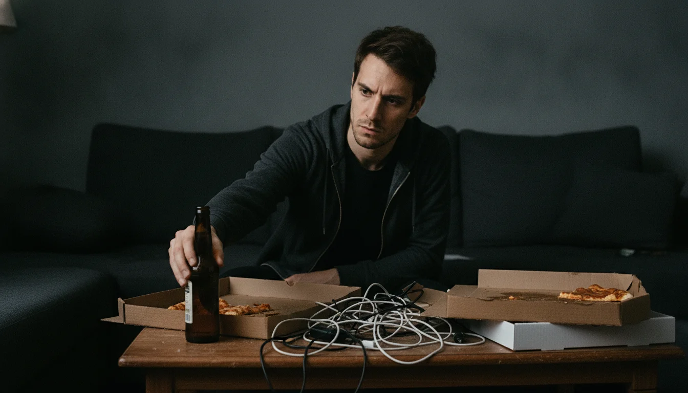
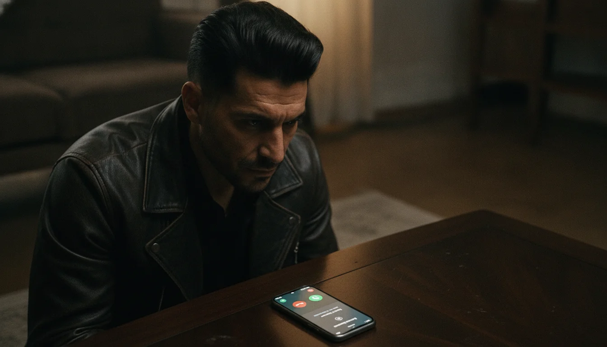
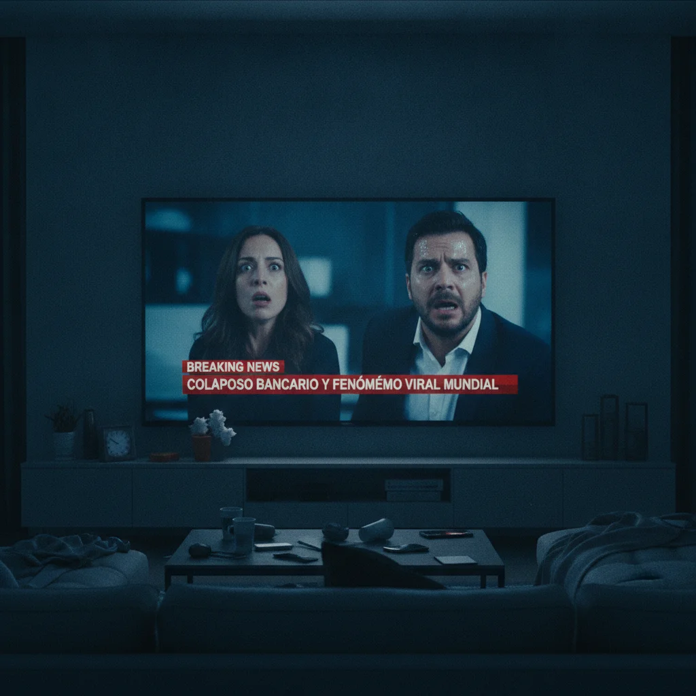
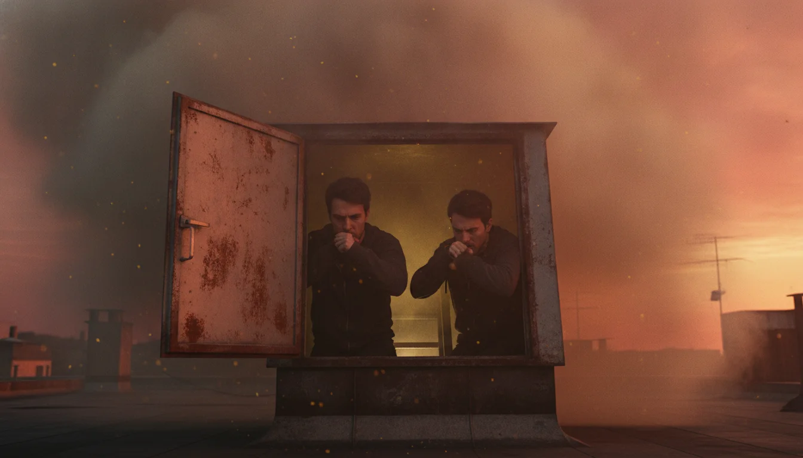
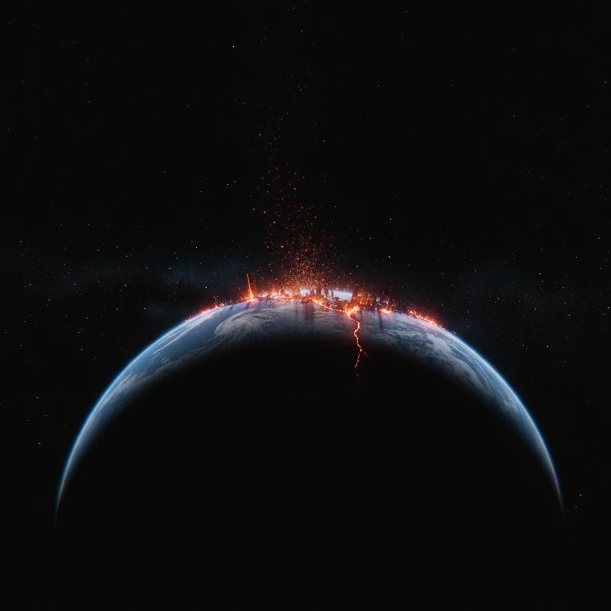

El enlace llegó a través de un canal de mensajería cifrada a las diez y cuarto de la noche. En la pantalla del teléfono de Hugo no había icono corporativo ni publicidad: solo un archivo ejecutable de tres megabytes y un letrero dorado sobre fondo negro: «Tres peticiones por usuario. Concesión inmediata y definitiva».
Hugo dejó la cerveza en la mesa baja, entre restos de pizza y cables enredados.
—Es una campaña de publicidad interactiva —dijo—. Alguna empresa probando algoritmos predictivos.
Marcos cogió el terminal y deslizó el dedo por el cristal.
—No pide permisos de cámara, ni micrófono, ni contactos —señaló, intrigado—. Solo tres recuadros vacíos numerados del uno al tres. Venga, Hugo, pide algo modesto. Que te condonen el préstamo del máster, a ver si tienen tanto presupuesto.
Elena, sentada en el otro extremo del sofá con las piernas cruzadas, alzó la vista por encima de sus gafas redondas de titanio.
—No instaléis ejecutables desconocidos. Os van a vaciar la cuenta en cuanto pulséis aceptar.
—No hay cuenta vinculada, Elena —replicó Marcos—. Mira la casilla uno. Parpadea esperando texto. Anda, Hugo, escribe.
Hugo titubeó. Pensó en las cuatro cuotas acumuladas y en las cartas de reclamación que su madre guardaba con disimulo en el cajón de la entrada. Tecleó despacio: «Cancelar la deuda pendiente de tres mil cuatrocientos euros en mi cuenta corriente».
Apretó el botón central. La pantalla emitió una vibración sorda y el primer recuadro se tiñó de gris plomo con la palabra *Aceptado*.
Durante dos minutos no ocurrió nada. Marcos se echó a reír:
—Lo dicho. Te han metido un troyano para minar criptomonedas.
Entonces sonó la notificación del banco. El timbre agudo cortó las risas. Hugo desbloqueó la aplicación bancaria oficial con el pulgar tembloroso: en el apartado de préstamos, el saldo figuraba a cero euros. Debajo aparecía un apunte contable emitido a las veintidós y diecinueve: *Regularización interna por incidencia técnica. Saldo amortizado*.

Los tres se quedaron mirando la cifra en completo silencio.
—Esto es imposible —susurró Elena, acercándose a la pantalla—. Un banco no amortiza tres mil euros un viernes por la noche.
—¡Ha funcionado! —exclamó Marcos, con la mirada encendida—. ¡Lo ha clavado en cuatro minutos!
Marcos descargó el archivo en su propio móvil. La misma interfaz oscura se abrió ante él.
—Marcos, espera —advirtió Hugo, sujetándole el brazo—. Si alguien tiene acceso a las pasarelas bancarias a este nivel, es un delito grave.
—¿Qué delito, si no he tocado nada? Si regalan dinero, yo no me quedo fuera.
Sin dudar, Marcos tecleó: «Nombramiento inmediato como jefe de cuentas de mi departamento con sueldo duplicado».
Pulsó aceptar. La vibración metálica recorrió su mano y la primera casilla cambió a gris ceniza.
—La tecnología no crea recursos de la nada —protestó Elena—. Toda transferencia informática descuenta en un lado lo que añade en otro. Si vosotros ganáis, alguien está perdiendo.
—Pues que pierda la multinacional —soltó Marcos.
Diez minutos más tarde, el teléfono de Marcos vibró con una llamada del director territorial de su empresa. Marcos puso el manos libres, tragando saliva.
—¿Marcos? Disculpa la hora —dijo la voz del jefe, apresurada—. Supongo que sabes la dimisión fulminante de Gonzalo esta noche en la junta. Necesitamos que tomes el mando del área mañana a primera hora. Te duplicamos el sueldo si aceptas el relevo ya.

Marcos aceptó con un hilo de voz. Al colgar, miró a Hugo con una palidez repentina.
—Dos de dos. Dos deseos pedidos, dos cumplidos.
—Esto no es un juego —dijo Hugo, sintiendo una punzada de alarma en el estómago—. Hay que borrarla ya.
Hugo intentó arrastrar el icono a la papelera. En lugar de desinstalarse, la pantalla mostró un mensaje en rojo: *El ciclo de tres peticiones es vinculante. Cada usuario debe agotar su cupo o transferir la carga. Deuda en curso*.
Hacia las tres de la madrugada, el teléfono de Hugo comenzó a sonar con una melodía estridente. Era el número fijo de sus padres.
Hugo descolgó de golpe.
—¿Mamá?
—¿Es usted el hijo de doña Carmen Morales? —preguntó una voz profesional, sobre un fondo de sirenas y monitores médicos—. Llamamos de urgencias de La Paz. Su madre ha sufrido un accidente cerebrovascular masivo en su domicilio hace cuatro horas. Un vecino la encontró en el suelo pasadas las diez y veinte. Su estado es crítico.
El móvil se le resbaló de los dedos a Hugo y cayó sobre la alfombra. Las diez y veinte. La hora exacta en que su deuda bancaria había desaparecido.
En ese instante, el teléfono de Marcos vibró con una llamada de su madre. La mujer apenas lograba hablar entre sollozos histéricos: Mateo, su hermano de diecinueve años, regresaba en moto cuando un camión saltó la mediana en la M-30. Traumatismo craneoencefálico severo, hemorragia torácica, pronóstico reservado en la UCI.
—No puede ser —balbuceaba Marcos, retrocediendo contra la pared—. Mateo estaba en la biblioteca...
Elena recogió el móvil de Hugo del suelo y examinó la pantalla. Bajo la primera casilla gris había brotado una línea diminuta: *Coste compensatorio devengado: nodo afectivo primario. Proporción de daño equivalente al valor del beneficio redimido*.

—Dios mío —susurró Elena, con la voz rota—. La aplicación es un intercambiador de deuda kármica. Cobra el beneficio material destruyendo a la persona que más quieres. Cuanto mayor es la ambición, más atroz es el golpe contra tu ser más cercano.
—¡Tengo que cancelarlo! —gritó Marcos, cayendo de rodillas mientras se mesaba el pelo—. ¡Pido que Mateo se cure! ¡Pido que despierte ya!
—¡No toques la pantalla! —bramó Hugo, sujetándole las manos con violencia—. ¡Si pides que tu hermano sane, el contraefecto buscará a otra persona! ¡Se llevará a tu madre o a ti!
Los avisos en redes sociales comenzaron a multiplicarse en sus teléfonos. Lo que creían un archivo restringido había reventado internet de madrugada.
Elena abrió el portátil y proyectó el navegador en el televisor. Las plataformas de vídeo y las cadenas de noticias estaban colapsadas por el mismo fenómeno: *The Three Wishes Project*.
—No es un enlace privado —dijo Elena, recorriendo mapas de tráfico digital—. Está en todas partes: Tokio, Londres, São Paulo. La gente se lo reenvía por grupos de trabajo y chats familiares.
En los informativos matinales se sucedían escenas de delirio colectivo. Ciudadanos anónimos que mostraban carteras millonarias de inversión, enfermos que abandonaban hospitales mientras sus familiares caían fulminados en los pasillos por paros cardíacos repentinos.
—Nadie lee la letra pequeña —dijo Hugo, apoyando la frente en el cristal—. Creen que es magia gratis. Están pidiendo mansiones, herencias, poder...
—Y cada deseo cobra su tributo de sangre —añadió Elena, con lágrimas en los ojos—. Millones de personas están muriendo ahora mismo en todos los continentes. Los hospitales han colapsado en seis horas.
Marcos miraba la pantalla de su móvil. La aplicación mostraba ahora una barra de progreso global que avanzaba a toda velocidad con un contador regresivo: *Peticiones planetarias activas: 6.840 millones de 8.000 millones*.
—La humanidad está agotando sus tres opciones —dijo Marcos, con la voz apagada—. ¿Qué pasará cuando no queden seres queridos a los que transferir el daño?

La respuesta llegó desde las entrañas de la Tierra.
Al mediodía del sábado, el edificio tembló con un quejido profundo y gutural. No era la vibración rápida de un seísmo tectónico, sino un crujido de compresión que abrió una grieta vertical en la pared maestra del salón, desde el zócalo hasta el techo.
Elena tecleó en el portátil buscando información sismológica. Los monitores registraban anomalías simultáneas en los cinco continentes.
—No son fallas conocidas —explicó, señalando las alertas rojas—. Son fracturas espontáneas en llanuras estables. El manto terrestre está perdiendo masa de soporte.
—La energía no se crea de la nada —dijo Hugo, mirándola con desesperación—. Si miles de millones de personas han exigido billones de bienes y materia sin realizar trabajo físico, la energía de compensación tiene que salir de alguna parte. Al agotarse los vínculos biológicos, el algoritmo está cobrando la factura a la corteza terrestre.
Una explosión lejana retumbó en el sur de la ciudad. A través del ventanal vieron alzarse una columna de humo negro con lenguas de fuego en el nudo de autopistas: una fisura magmática acababa de desgarrar el asfalto, engullendo hileras de coches bajo ríos de lava y gases de azufre.
Las sirenas de emergencia se apagaron. En la calle, la gente corría sin rumbo, aferrada a sus teléfonos móviles como talismanes malditos, rogando o tecleando sus últimas peticiones con la desesperación de quien ya lo ha perdido todo.
Al atardecer, el cielo adoptó un tono cobrizo y cárdeno que no pertenecía a ningún crepúsculo natural. Una densa calima de ceniza suspendida quemaba la garganta con un olor penetrante a azufre.
Hugo, Marcos y Elena subieron a la azotea del edificio. El viento caliente arrastraba copos de hollín blanco que caían como una nevada macabra. Al norte, la sierra mostraba conos volcánicos recién abiertos que vomitaban piroclastos hacia la estratosfera.
Pero la mayor amenaza venía de arriba.
La atmósfera comenzó a rasgarse con destellos esmeralda y violeta. Decenas de estelas incandescentes cruzaron la bóveda celeste a velocidades hipersónicas: bólidos y fragmentos de asteroides de decenas de metros de diámetro entraban en fricción con el aire, provocando detonaciones que sacudían los tímpanos.
—La gravedad —susurró Elena, apretándose el jersey contra el pecho—. La alteración masiva ha perturbado el campo gravitatorio de la Tierra. El planeta está atrayendo los detritos del espacio cercano.

Un bólido colosal impactó a pocos kilómetros al oeste. La onda expansiva barrió las copas de los árboles, reventó los cristales de los rascacielos y sacudió la azotea con una bofetada de aire hirviente que los arrojó contra el murete de ladrillo.
Marcos se incorporó con lentitud. Tenía las manos ensangrentadas y la ropa cubierta de ceniza, pero en sus ojos solo había un vacío absoluto. Sostenía el móvil hacia el cielo en llamas.
—Mi madre ha muerto hace diez minutos en el hospital —dijo con voz hueca—. Y Mateo no ha salido del quirófano. Ya no me queda nadie en este mundo a quien pueda querer.
—Marcos, tira ese teléfono —suplicó Hugo, agarrándose al murete mientras el suelo ondulaba bajo sus pies—. ¡Tíralo ya!
—¿Para qué? —respondió Marcos con una sonrisa rota—. Si ya no queda nadie a quien proteger, el coste no tiene dueño. Voy a pedir el tercero. Voy a pedir que todo se acabe deprisa.
—¡No lo hagas! —gritó Elena, abalanzándose hacia él.
El pulgar de Marcos rozó la tercera casilla. El terminal emitió una llamarada de luz blanca que fundió el cristal del dispositivo en un instante y le abrasó la piel de la mano, dejando una quemadura renegrida en forma de circuito.
En todos los rincones del planeta, los teléfonos de los ocho mil millones de habitantes emitieron un silbido continuo y penetrante, una frecuencia aguda que vibraba en los huesos y atravesaba los muros.
Hugo miró su pantalla. El contador planetario se clavó en una cifra final: *Peticiones completadas: 24.000 millones de 24.000 millones. Cupo de la especie extinguido*.
Un mensaje final ocupó todo el sistema: *Transacción cerrada. La ambición individual ha consumido la totalidad de la energía vinculante del sistema. Procediendo a la liquidación del activo residual*.
El cielo se abrió en dos. Una cortina tupida de miles de meteoritos comenzó a llover sobre el horizonte, uniendo las nubes de ceniza con el suelo en una cascada de fuego incesante. La ciudad entera se encendió con la luz espectral de un mediodía artificial, mientras ríos de lava brotaban por las avenidas y los edificios colapsaban bajo la marea ardiente.
Hugo abrazó a Elena con fuerza contra el murete de la azotea, cerrando los ojos mientras el rugido de los impactos borraba cualquier otro sonido en la Tierra. En la palma de su mano, el móvil se calentó hasta volverse una brasa insoportable, pero no lo soltó. Comprendió, en el último segundo antes de que la luz blanca lo cubriera todo, que la aplicación jamás había engañado a nadie: les había entregado con milimétrica precisión lo que habían pedido, y el precio final por haber exigido un milagro egoísta era el mundo entero.